Download và trực quan hóa dữ liệu Covid-19 từ John Hopkins database (sử dụng Python code)

Covid-19 là một đại dịch bệnh truyền nhiễm với tác nhân là virus SARS-CoV-2, hiện đang ảnh hưởng và gây thiệt hại nặng nề trên phạm vi toàn cầu. Kể từ khi đại dịch Covid-19 bắt đầu xuất hiện ở Vũ Hán - Trung Quốc đến nay, cái tên trường Đại học Jonhs Hopkins (Mỹ) được nhắc đi nhắc lại hằng ngày trên các phương tiện truyền thông và là một trong những cụm từ được trích dẫn nhiều nhất. Lý do đó là Đại học Johns Hopkins đã phát triển một trong những hệ thống theo dõi dữ liệu COVID-19 bền bỉ và đáng tin cậy nhất trên thế giới cho đến nay.
Dữ liệu Covid-19 được đại học John Hopkins thu thập và cập nhật hàng ngày tại đây
John Hopkins database.
Trong bài này để hiểu hơn về đại dịch này tôi sẽ hướng dẫn các bạn cách download dữ liệu Covid-19 từ
John Hopkins database và thực hành các thao tác chuẩn bị dữ liệu (làm sạch và biến đổi) với thư viện pandas và trực quan hóa dữ liệu với thư viện maplotlib sử dụng ngôn ngữ Python. Sau khi đọc xong bài này các bạn sẽ nắm được:
-
Cách download dữ liệu Covid-19 từ
Jonh Hopkins -
Cách làm sạch và biến đổi dữ liệu dạng
data framevới thư việnpandas: xử lý dữ liệu bị thiếu, gộp các dataframes, chuyển đổi dữ liệu từ dạngwide formatsang dạnglong fromat, subset,…. -
Cách trực quan hóa dữ liệu
Covid-19sử dụng thư việnmatplotlib: Pie chart, Bar chart, Line chart, Multi-Line Chart, xử lý dữ liệudatetrong vẽ biểu đồ,…
Từ đó các bạn có thể phát triển các kỹ thuật trên thành các Data visualization Dashboards hoặc là web tương tác để tracking tình hình Covid-19 trên toàn thế giới tương tự như
John Hopkins University Dashboard,
WHO COVID-19 Dashboard,…
Nội dung chính của bài bao gồm:
1. Download & chuẩn bị dữ liệu Covid-19 sử dụng thư viện pandas
2. Trực quan hóa dữ liệu Covid-19 sử dụng thư viện matploblib
1. Download và chuẩn bị dữ liệu
Trước hết để thực hành chúng ta cần nạp các thư viện cần thiết trên Python:
import pandas as pd
import matplotlib.pyplot as plt
import numpy as np
from datetime import datetime, timedelta
Để thực hành tôi sẽ load 3 tập dữ liệu sau từ kho dữ liệu qua url_links:
-
Confirmed:(Số trường hợp mới phát hiện) -
Deaths:(Số trường hợp tử vong) -
Recovered:(Số trường hợp hồi phục)
url_confd = 'https://raw.githubusercontent.com/CSSEGISandData/COVID-19/master/csse_covid_19_data/csse_covid_19_time_series/time_series_covid19_confirmed_global.csv'
url_death = 'https://raw.githubusercontent.com/CSSEGISandData/COVID-19/master/csse_covid_19_data/csse_covid_19_time_series/time_series_covid19_deaths_global.csv'
url_recvd = 'https://raw.githubusercontent.com/CSSEGISandData/COVID-19/master/csse_covid_19_data/csse_covid_19_time_series/time_series_covid19_recovered_global.csv'
df_confd = pd.read_csv(url_confd)
df_death = pd.read_csv(url_death)
df_recvd = pd.read_csv(url_recvd)
Kiểm tra thông tin các tập dữ liệu này:
print(df_confd.info())
<class 'pandas.core.frame.DataFrame'>
RangeIndex: 266 entries, 0 to 265
Columns: 224 entries, Province/State to 8/28/20
dtypes: float64(2), int64(220), object(2)
memory usage: 465.6+ KB
None
print(df_death.info())
<class 'pandas.core.frame.DataFrame'>
RangeIndex: 266 entries, 0 to 265
Columns: 224 entries, Province/State to 8/28/20
dtypes: float64(2), int64(220), object(2)
memory usage: 465.6+ KB
None
print(df_recvd.info())
<class 'pandas.core.frame.DataFrame'>
RangeIndex: 253 entries, 0 to 252
Columns: 223 entries, Province/State to 8/27/20
dtypes: float64(2), int64(219), object(2)
memory usage: 440.9+ KB
None
Kiểm tra 5 hàng đầu tiên của tập dữ liệu df_confd (2 tập còn lại tương tự):
print(df_confd.head(5))
Province/State Country/Region Lat Long 1/22/20 1/23/20 \
0 NaN Afghanistan 33.93911 67.709953 0 0
1 NaN Albania 41.15330 20.168300 0 0
2 NaN Algeria 28.03390 1.659600 0 0
3 NaN Andorra 42.50630 1.521800 0 0
4 NaN Angola -11.20270 17.873900 0 0
1/24/20 1/25/20 1/26/20 1/27/20 ... 8/19/20 8/20/20 8/21/20 \
0 0 0 0 0 ... 37599 37856 37894
1 0 0 0 0 ... 7812 7967 8119
2 0 0 0 0 ... 39847 40258 40667
3 0 0 0 0 ... 1024 1024 1045
4 0 0 0 0 ... 2015 2044 2068
8/22/20 8/23/20 8/24/20 8/25/20 8/26/20 8/27/20 8/28/20
0 37953 37999 38054 38070 38113 38129 38140
1 8275 8427 8605 8759 8927 9083 9195
2 41068 41460 41858 42228 42619 43016 43403
3 1045 1045 1060 1060 1098 1098 1124
4 2134 2171 2222 2283 2332 2415 2471
[5 rows x 224 columns]
Trích xuất thông tin về ngày từ tập dữ liệu:
dates = df_confd.columns[4:]
print(dates)
Index(['1/22/20', '1/23/20', '1/24/20', '1/25/20', '1/26/20', '1/27/20',
'1/28/20', '1/29/20', '1/30/20', '1/31/20',
...
'8/19/20', '8/20/20', '8/21/20', '8/22/20', '8/23/20', '8/24/20',
'8/25/20', '8/26/20', '8/27/20', '8/28/20'],
dtype='object', length=220)
Các tập dữ liệu này được lưu ở dạng wide format do đó chúng ta cần chuyển chúng dạng long fromat:
dates = df_confd.columns[4:]
long_df_confd = df_confd.melt(id_vars=['Province/State', 'Country/Region', 'Lat', 'Long'],
value_vars=dates, var_name='Date', value_name='Confirmed')
long_df_death = df_death.melt(id_vars=['Province/State', 'Country/Region', 'Lat', 'Long'],
value_vars=dates, var_name='Date', value_name='Deaths')
long_df_recvd = df_recvd.melt(id_vars=['Province/State', 'Country/Region', 'Lat', 'Long'],
value_vars=dates, var_name='Date', value_name='Recovered')
Kiểm tra dữ liệu sau khi đã chuyển:
print(long_df_confd.head(5))
Province/State Country/Region Lat Long Date Confirmed
0 NaN Afghanistan 33.93911 67.709953 1/22/20 0
1 NaN Albania 41.15330 20.168300 1/22/20 0
2 NaN Algeria 28.03390 1.659600 1/22/20 0
3 NaN Andorra 42.50630 1.521800 1/22/20 0
4 NaN Angola -11.20270 17.873900 1/22/20 0
print(long_df_death.head(5))
Province/State Country/Region Lat Long Date Deaths
0 NaN Afghanistan 33.93911 67.709953 1/22/20 0
1 NaN Albania 41.15330 20.168300 1/22/20 0
2 NaN Algeria 28.03390 1.659600 1/22/20 0
3 NaN Andorra 42.50630 1.521800 1/22/20 0
4 NaN Angola -11.20270 17.873900 1/22/20 0
print(long_df_recvd.head(5))
Province/State Country/Region Lat Long Date Recovered
0 NaN Afghanistan 33.93911 67.709953 1/22/20 0
1 NaN Albania 41.15330 20.168300 1/22/20 0
2 NaN Algeria 28.03390 1.659600 1/22/20 0
3 NaN Andorra 42.50630 1.521800 1/22/20 0
4 NaN Angola -11.20270 17.873900 1/22/20 0
Gộp 3 tập dữ liệu này thành 1 dataframe:
final_df = pd.merge(left=long_df_confd, right=long_df_death, how='left',
on=['Province/State', 'Country/Region', 'Date', 'Lat', 'Long'])
final_df = pd.merge(left=final_df, right=long_df_recvd, how='left',
on=['Province/State', 'Country/Region', 'Date', 'Lat', 'Long'])
Chuyển cột dữ liệu ngày về dạng date:
final_df['Date'] = pd.to_datetime(final_df['Date'])
Kiểm tra bảng dữ liệu thu được:
print(final_df.head(5))
Province/State Country/Region Lat Long Date Confirmed \
0 NaN Afghanistan 33.93911 67.709953 2020-01-22 0
1 NaN Albania 41.15330 20.168300 2020-01-22 0
2 NaN Algeria 28.03390 1.659600 2020-01-22 0
3 NaN Andorra 42.50630 1.521800 2020-01-22 0
4 NaN Angola -11.20270 17.873900 2020-01-22 0
Deaths Recovered
0 0 0.0
1 0 0.0
2 0 0.0
3 0 0.0
4 0 0.0
Kiểm tra kích thước của bảng dữ liệu thu được:
print(final_df.shape)
(58520, 8)
Kiểm tra khoảng thời gian của dữ liệu được thu thập:
a = final_df.Date.value_counts().sort_index()
print('Ngày bắt đầu là:',a.index[0])
print('Ngày hiện tại là:',a.index[-1])
Ngày bắt đầu là: 2020-01-22 00:00:00
Ngày hiện tại là: 2020-08-28 00:00:00
Kiểm tra missing values (NaN) trong tập dữ liệu:
final_df.isna().sum()
Province/State 40515
Country/Region 0
Lat 0
Long 0
Date 0
Confirmed 0
Deaths 0
Recovered 4161
dtype: int64
Đánh giá phần trăm missing values của từng cột dữ liệu:
NAN = [(c, final_df[c].isna().mean()*100) for c in final_df]
NAN = pd.DataFrame(NAN, columns=["column_name", "percentage"])
print(NAN)
column_name percentage
0 Province/State 69.548872
1 Country/Region 0.000000
2 Lat 0.000000
3 Long 0.000000
4 Date 0.000000
5 Confirmed 0.000000
6 Deaths 0.000000
7 Recovered 7.142857
Ta thấy cột Province/State có gần 69.55% dữ liệu bị thiếu và cột Recovered có 7,14%. Vì vậy chúng ta cần xử lý các giá trị thiếu này:
# Thay thế nan thành 0 cho cột Recovered
final_df['Recovered'] = final_df['Recovered'].fillna(0)
# Thay thế nan thành Unknown cho cột Province/State
final_df["Province/State"]= final_df["Province/State"].fillna('Unknown')
Kiểm tra xem trong dữ liệu còn missing values không:
final_df.isna().sum()
Province/State 0
Country/Region 0
Lat 0
Long 0
Date 0
Confirmed 0
Deaths 0
Recovered 0
dtype: int64
Kiểm tra kiểu dữ liệu:
print(final_df.dtypes)
Province/State object
Country/Region object
Lat float64
Long float64
Date datetime64[ns]
Confirmed int64
Deaths int64
Recovered float64
dtype: object
Thay đổi kiểu dữ liệu cho các cột Confirmed, Deaths và Recovered thành int:
final_df[["Confirmed","Deaths","Recovered"]] = final_df[["Confirmed","Deaths","Recovered"]].astype(int)
print(final_df.dtypes)
Province/State object
Country/Region object
Lat float64
Long float64
Date datetime64[ns]
Confirmed int32
Deaths int32
Recovered int32
dtype: object
Tạo thuộc tính mới Active (Số trường hợp còn đang nhiễm sau khi đã trừ đi số trường hợp tử vong và hồi phục):
$$Active = Confirmed - Deaths - Recovered$$
final_df['Active'] = final_df['Confirmed'] - final_df['Deaths'] - final_df['Recovered']
print(final_df.head(5))
Province/State Country/Region Lat Long Date Confirmed \
0 Unknown Afghanistan 33.93911 67.709953 2020-01-22 0
1 Unknown Albania 41.15330 20.168300 2020-01-22 0
2 Unknown Algeria 28.03390 1.659600 2020-01-22 0
3 Unknown Andorra 42.50630 1.521800 2020-01-22 0
4 Unknown Angola -11.20270 17.873900 2020-01-22 0
Deaths Recovered Active
0 0 0 0
1 0 0 0
2 0 0 0
3 0 0 0
4 0 0 0
2. Trực quan hóa dữ liệu
2.1 Tổng quan tình hình Covid -19 trên toàn thế giới tính tới thời điểm đang viết bài này:
Kiểm tra tổng số nước trên toàn thế giới trong tập dữ liệu:
len(final_df['Country/Region'].unique())
188
Tổng các cases trên toàn thế giới:
df = pd.DataFrame(pd.to_numeric(final_df[['Confirmed', 'Deaths', 'Recovered', 'Active']].sum()),dtype=np.float64).transpose()
df['Last date'] = max(final_df['Date'])
print(df)
Confirmed Deaths Recovered Active Last date
0 1.492646e+09 67290986.0 798778726.0 626576735.0 2020-08-28
Tạo Pie chart so sánh các cases trên toàn thế giới:
cases = ['Confirmed', 'Deaths', 'Recovered', 'Active']
colors = ['gold', 'yellowgreen', 'lightcoral', 'lightskyblue']
explode = (0.1, 0, 0, 0) # explode 1st slice
sizes = sum(df.loc[:, 'Confirmed':'Active'].values)
explode = (0.1, 0, 0, 0) # explode 1st slice
# Plot
f = plt.figure(figsize=(8,8))
plt.pie(sizes, explode=explode,
textprops=dict(size=15,color='black'),
labels=cases,
colors=colors,
autopct='%1.1f%%',
shadow=True,
startangle=140)
plt.axis('equal')
plt.show()
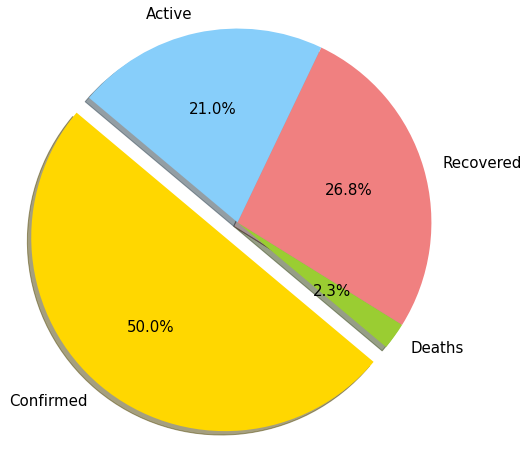
2.2 Top 10 nước có số trường hợp (confirmed, deaths, recovered and active cases) lớn nhất
Tính tổng các cases của từng nước tính đến thười điểm hiện tại:
df_countries = final_df.copy().drop(['Lat','Long','Province/State', 'Date'],axis =1)
df_countries = df_countries.groupby(["Country/Region"]).sum()
Top 10 nước có confirmed cases lớn nhất:
f = plt.figure(figsize=(10,5))
f.add_subplot(111)
plt.axes(axisbelow=True)
plt.barh(df_countries.sort_values('Confirmed')["Confirmed"].index[-10:],df_countries.sort_values('Confirmed')["Confirmed"].values[-10:],color="darkcyan")
plt.tick_params(size=5,labelsize = 13)
plt.xlabel("Confirmed Cases",fontsize=18)
plt.title("Top 10 Countries (Confirmed Cases)",fontsize=20)
plt.grid(alpha=0.3)
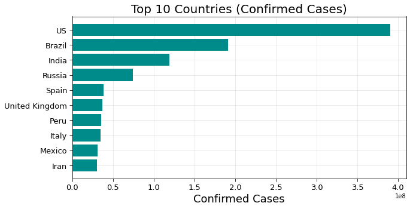
Top 10 nước có Deaths lớn nhất:
f = plt.figure(figsize=(10,5))
f.add_subplot(111)
plt.axes(axisbelow=True)
plt.barh(df_countries.sort_values('Deaths')["Deaths"].index[-10:],df_countries.sort_values('Deaths')["Deaths"].values[-10:],color="crimson")
plt.tick_params(size=5,labelsize = 13)
plt.xlabel("Deaths Cases",fontsize=18)
plt.title("Top 10 Countries (Deaths)",fontsize=20)
plt.grid(alpha=0.3,which='both')
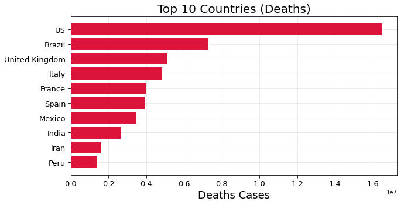
Top 10 nước có Recovered Cases lớn nhất:
f = plt.figure(figsize=(10,5))
f.add_subplot(111)
plt.axes(axisbelow=True)
plt.barh(df_countries.sort_values('Recovered')["Recovered"].index[-10:],df_countries.sort_values('Recovered')["Recovered"].values[-10:],color="limegreen")
plt.tick_params(size=5,labelsize = 13)
plt.xlabel("Recovered Cases",fontsize=18)
plt.title("Top 10 Countries (Recovered Cases)",fontsize=20)
plt.grid(alpha=0.3,which='both')
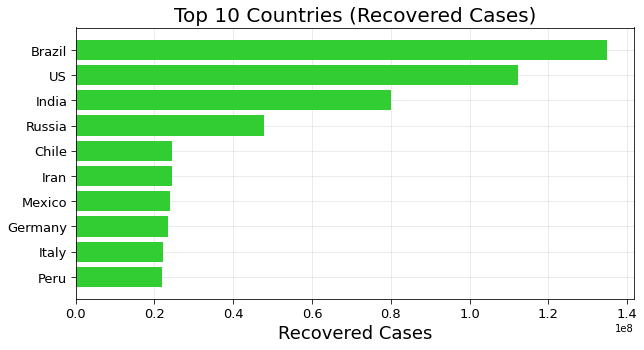
Top 10 nước có Active Cases lớn nhất:
f = plt.figure(figsize=(10,5))
f.add_subplot(111)
plt.axes(axisbelow=True)
plt.barh(df_countries.sort_values('Active')["Active"].index[-10:],df_countries.sort_values('Active')["Active"].values[-10:],color="darkorange")
plt.tick_params(size=5,labelsize = 13)
plt.xlabel("Active Cases",fontsize=18)
plt.title("Top 10 Countries (Active Cases)",fontsize=20)
plt.grid(alpha=0.3,which='both')
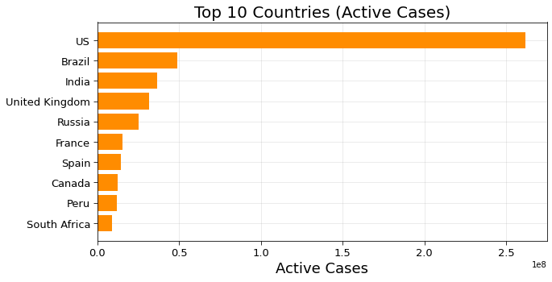
2.3 Mức độ phát triển của Covid-19 theo thời gian trên toàn thế giới
Tính tổng các cases trên toàn thế giới theo thời gian
df_world = final_df.groupby(["Date"])[["Confirmed","Active","Recovered","Deaths"]].sum().reset_index()
df_world.set_index('Date',inplace=True)
Mức độ phát triển của Confirmed cases trên toàn thế giới theo thời gian:
# Create figure and plot space
fig, ax = plt.subplots(figsize=(10, 6))
# Add x-axis and y-axis
ax.bar(df_world.index.values,
df_world['Confirmed'],
color='blue')
# Set title and labels for axes
ax.set(xlabel="Date",
ylabel="Confirmed cases",
title="Confirmed Cases In Each Day")
# Rotate tick marks on x-axis
plt.setp(ax.get_xticklabels(), rotation=45)
plt.grid(alpha=0.3,which='both')
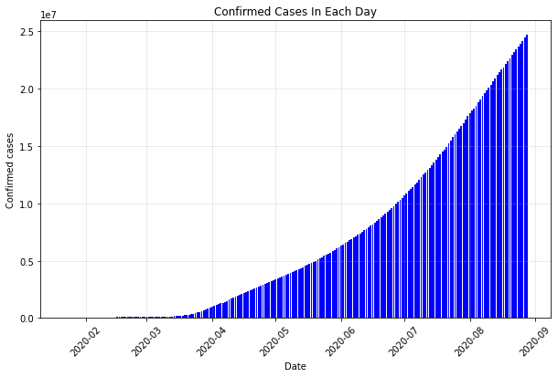
Mức độ phát triển của Deaths trên toàn thế giới theo thời gian:
# Create figure and plot space
fig, ax = plt.subplots(figsize=(10, 6))
# Add x-axis and y-axis
ax.bar(df_world.index.values,
df_world['Deaths'],
color='red')
# Set title and labels for axes
ax.set(xlabel="Date",
ylabel="Deaths",
title="Deaths In Each Day")
# Rotate tick marks on x-axis
plt.setp(ax.get_xticklabels(), rotation=45)
plt.grid(alpha=0.3,which='both')
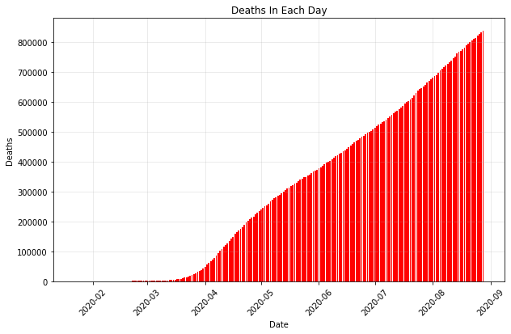
Mức độ phát triển của Recovered cases trên toàn thế giới theo thời gian:
# Create figure and plot space
fig, ax = plt.subplots(figsize=(10, 6))
# Add x-axis and y-axis
ax.bar(df_world.index.values,
df_world['Recovered'],
color='purple')
# Set title and labels for axes
ax.set(xlabel="Date",
ylabel="Recovered cases",
title="Recovered Cases In Each Day")
# Rotate tick marks on x-axis
plt.setp(ax.get_xticklabels(), rotation=45)
plt.grid(alpha=0.3,which='both')
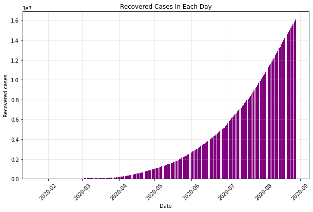
Mức độ phát triển của Active Cases trên toàn thế giới theo thời gian:
# Create figure and plot space
fig, ax = plt.subplots(figsize=(10, 6))
# Add x-axis and y-axis
ax.bar(df_world.index.values,
df_world['Active'],
color= 'green')
# Set title and labels for axes
ax.set(xlabel="Date",
ylabel="Active Cases",
title="Active Cases In Each Day")
# Rotate tick marks on x-axis
plt.setp(ax.get_xticklabels(), rotation=45)
plt.grid(alpha=0.3,which='both')
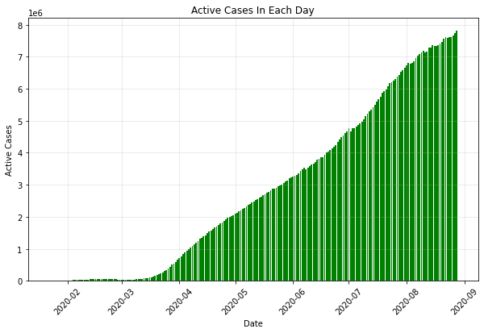
2.4 Hiển thị tất cả các cases trên thế giới theo thời gian
# Create figure and plot space
fig, ax = plt.subplots(figsize=(12, 6))
# Add x-axis and y-axis
ax.plot(df_world.index.values,
df_world['Confirmed'],
color='blue', label = 'Confirmed Cases')
ax.plot(df_world.index.values,
df_world['Deaths'],
color='red', label = 'Deaths')
ax.plot(df_world.index.values,
df_world['Recovered'],
color='purple', label = 'Recovered Cases')
ax.plot(df_world.index.values,
df_world['Active'],
color= 'green', label= 'Active Cases')
# Set title and labels for axes
ax.set(xlabel="Date",
ylabel="Cases",
title="COVID-19 Cases In Each Day")
# Rotate tick marks on x-axis
plt.setp(ax.get_xticklabels(), rotation=45)
plt.legend(loc="upper left")
plt.grid(alpha=0.3,which='both')
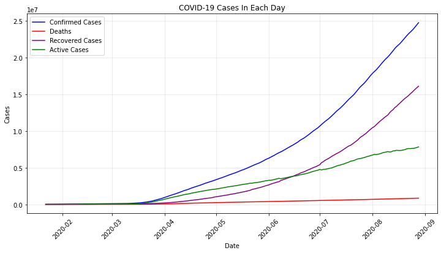
2.5 Tổng số lượng các quốc gia trên thế giới xuất hiện dịch bệnh Covid-19 theo thời gian
# Tính tổng số lượng các nước xuất hiện dịch Covid-19 theo thời gian
case_nums_country = df_confd.groupby("Country/Region").sum().drop(['Lat','Long'],axis =1).apply(lambda x: x[x > 0].count(), axis =0)
d = [datetime.strptime(date,'%m/%d/%y').strftime("%d %b") for date in case_nums_country.index]
f = plt.figure(figsize=(10,5))
f.add_subplot(111)
marker_style = dict(c="crimson",linewidth=1, linestyle='-', marker='o',markersize=4, markerfacecolor='blue')
plt.plot(df_world.index.values, case_nums_country,**marker_style)
plt.setp(ax.get_xticklabels(), rotation=90)
plt.xlabel("Dates",fontsize=10)
plt.grid(alpha = 0.3)
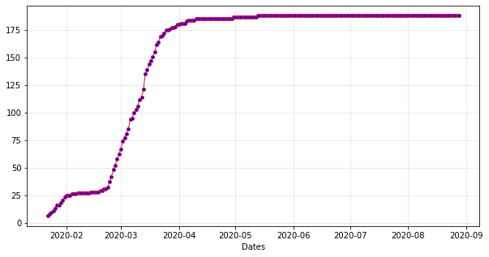
2.6 So sánh sự phát triển của COVID-19 theo thời gian giữa các nước
So sánh Việt Nam, Mỹ, Nga:
df_Vietnam = final_df[final_df['Country/Region'] == 'Vietnam']
df_Russia = final_df[final_df['Country/Region'] == 'Russia']
df_US = final_df[final_df['Country/Region'] == 'US']
Do Mỹ và Nga cùng có số lượng các cases lớn nên biểu thị vào cùng một biểu đồ:
# Create figure and plot space
fig, ax = plt.subplots(figsize=(12, 6))
# Add x-axis and y-axis
ax.plot(df_US['Date'],
df_US['Confirmed'],
color='blue', label = 'Confirmed Cases of US')
ax.plot(df_US['Date'],
df_US['Active'],
'-.',
color='blue', label = 'Active Cases of US')
ax.plot(df_US['Date'],
df_US['Recovered'],
'--',
color='blue', label = 'Recovered Cases of US')
ax.plot(df_Russia['Date'],
df_Russia['Confirmed'],
color='red', label = 'Confirmed Cases of Russia')
ax.plot(df_Russia['Date'],
df_Russia['Active'],
'-.',
color='red', label = 'Active Cases of Russia')
ax.plot(df_Russia['Date'],
df_Russia['Recovered'],
'--',
color='red', label = 'Recovered Cases of Russia')
# Set title and labels for axes
ax.set(xlabel="Date",
ylabel="Cases",
title="Confirmed Cases of COVID-19 of Russia vs US")
# Rotate tick marks on x-axis
plt.setp(ax.get_xticklabels(), rotation=45)
plt.legend(loc="upper left")
plt.grid(alpha=0.3,which='both')
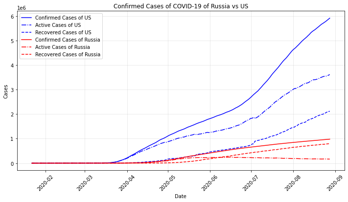
Việt nam có tổng số các cases nhỏ hơn rất nhiều so với Russia và Mỹ nên nếu biểu thị vào cùng 1 biểu đồ thì sẽ rất khó nhìn. Do vậy tôi biểu diễn Việt Nam riêng:
fig, ax = plt.subplots(figsize=(12, 6))
# Add x-axis and y-axis
ax.plot(df_Vietnam['Date'],
df_Vietnam['Confirmed'],
color="red", label = 'Confirmed Cases of Vietnam')
ax.plot(df_Vietnam['Date'],
df_Vietnam['Deaths'],
'-.',
color="black", label = 'Death Case of Vietnam')
ax.plot(df_Vietnam['Date'],
df_Vietnam['Active'],
'-.',
color="blue", label = 'Active Cases of Vietnam')
ax.plot(df_Vietnam['Date'],
df_Vietnam['Recovered'],
'--',
color="green", label = 'Recovered Cases of Vietnam')
# Set title and labels for axes
ax.set(xlabel="Date",
ylabel="Cases",
title="COVID-19 cases of Vietnam")
# Rotate tick marks on x-axis
plt.setp(ax.get_xticklabels(), rotation=45)
plt.legend(loc="upper left")
plt.grid(alpha=0.3,which='both')
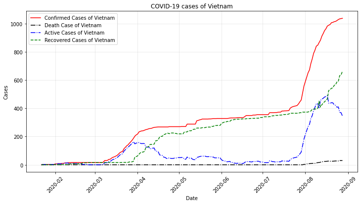
Cuong Sai
PhD student
My research interests include Industrial AI (Intelligent predictive maintenance), Machine and Deep learning, Time series forecasting, Intelligent machinery fault diagnosis, Prognostics and health management, Error metrics / forecast evaluation.